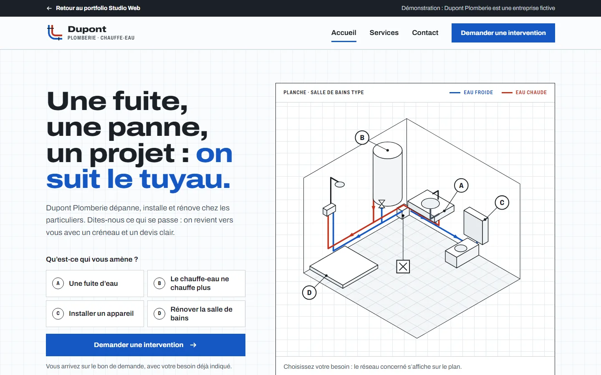

Dupont Plomberie
Artisan plombier, site de 3 pages
- Objectif
- Qu’un particulier inquiet trouve tout de suite son problème et demande une intervention en deux minutes, sur téléphone.
- Choix
- Le site est dessiné comme un plan de plombier : eau froide en bleu, eau chaude en rouge, et un schéma de salle de bains interactif qui oriente vers le bon de demande.
- Résultat
- Une démo de trois pages, à parcourir comme un vrai site.